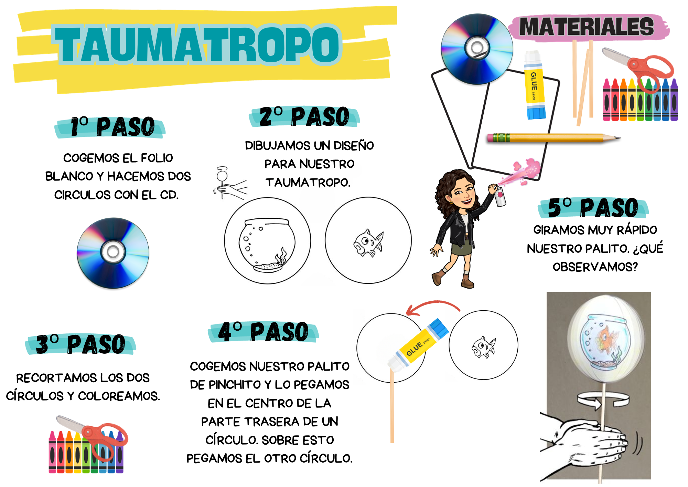
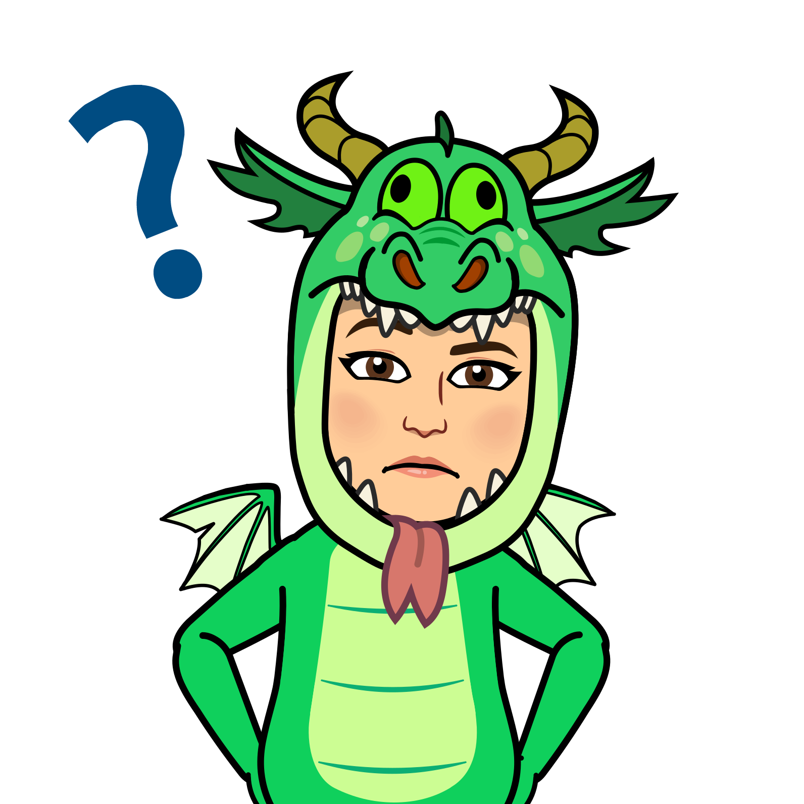

El taumatropo es un juguete óptico que se emplea para dar la sensación de movimiento en las imágenes. Consiste en un disco con una imagen en cada una de sus caras.
LA LUZ
5- Creamos un taumatropo.

¿Cómo ocurre esto ?
Este fenómeno ocurre debido a la PERSISTENCIA RETINIANA permite que una imagen permanezca en nuestra retina menos de un segundo. Estos mili segundos se aprovechan para crear ilusiones ópticas como esta.
¿Sabéis donde se encuentra la retina ? ¿Sabéis cuál es la estructura de nuestro ojo y como captamos las imágenes?
Obra publicada con Licencia Creative Commons Reconocimiento Compartir igual 4.0